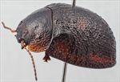
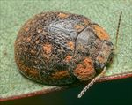
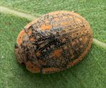
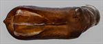
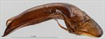
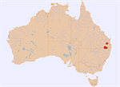

Click on images to enlarge
![Male, Inglewood, S.E. Queensland [2021-103]](assets/image/Ta113/Ta113_A21-103_(2).jpg){kind=link}

Male, Inglewood, S.E. Queensland [2021-103]


Male, Cooyar, S.E. Queensland


Male, Greenlands, S.E. Queensland


Aedeagus, dorsal view (Inglewood, S.E. Queensland)


Aedeagus, lateral view (Inglewood, S.E. Queensland)


Distribution
Name
Trachymela sp. Ta113
Reference specimen
2021-103, Inglewood, SE Queensland.
Adult Description
Length: ♂ 6.8–7.7 mm (n=13), ♀ 7.0–8.3 mm (n=13).
Colouration:
- Head: frons dark brown, clypeus dark brown or black with black rarely extending to area adjacent to eyes, labrum usually yellow-brown less often much darker or black, mandibles mid-brown, usually with dark brown or black tips; antennomeres 1–3 light brown, 4–8 grading towards dark brown or black, 9–11 concolorous with 8.
- Pronotum: disc dark brown, concolorous with rear of head, often with diffuse areas that are much darker or even black, rarely these darker areas extend over almost the whole of disc, lateral margins tend to be slightly to considerably paler in shade.
- Scutellum: dark brown, less frequently black.
- Elytra: dark brown, similar or somewhat darker shade than pronotal disc, a few small to moderate sized patches of lighter shade are always present, most prominently along elytral margin and in middle of antero-median depression as well as two along anterior margin of disc between scutellum and humeral callus, other smaller and less prominent such patches are present in posterior half of disc, arranged in 3 longitudinal rows; punctures are similar in shade to interstices, humeral callus similar to surrounding area.
- Venter & Legs: venter dark brown, rarely almost black, legs sometimes fractionally darker, elytral epipleura dark brown, sometimes tending towards black along elytral margin.
- Cuticular Wax: light brown to orange-brown, with a patchy distribution – concentrations are present in two patches on the head, along the lateral margins of the pronotum (with a prominent, small wax-free peak often present in centre of each patch), in a band within the sub-marginal sulcus of the elytra that is interrupted below antero-median depression, 2 small patches at base of each elytron and another (slightly larger) in the centre of antero-median depression, smaller patches arranged roughly in 3 longitudinal lines (VR2, VR4 and VR6) from antero-median depression towards apex; elsewhere the cuticular wax is more sparsely scattered.
Morphology:
- Shape: viewed laterally, curvature of upper outline most pronounced in anterior and posterior thirds, noticeably less so in central third, H/L: ♂ 0.38–0.44, ♀ 0.43–0.47, greatest height a little in front of elytral margin.
- Head: punctures relatively fine (pd ≈ 1.5–2× ef) and quite evenly and densely distributed; antennae short (AL/BL: ♂ 39–44%, ♀ 31–34%), filiform.
- Pronotum: almost evenly curved transversely throughout, sometimes very slightly explanate near margins, shallow foveal depression present with a small, verruca-like elevation situated directly behind centre of eye, discal surface slightly uneven, nitid, puncturation variable, from clearly impressed and similar to fractionally larger than those on head to somewhat larger than those on head and outlines less clearly defined, quite evenly to very slightly unevenly distributed and moderately dense (spacing ≈ 1.5–2.5 pd), punctures very coarse in foveal area and lateral margins; front margins join much thinner lateral margins in a smoothly rounded right-angle, with lateral margin then approximately straight for a considerable distance before curving smoothly and gradually towards rear margin and thickening slightly, broadest quite close to posterolateral angle.
- Scutellum: variable, usually punctured, with punctures sometimes similar to those on adjacent area of pronotum, more often shallower, sometimes surface is unpunctured but rough in appearance.
- Elytra: surface smoothly curved throughout longitudinally, evenly or very slightly explanate transversely, antero-median depression shallow and quite small, marked by absence of verrucae, punctures closely spaced and relatively evenly distributed with interstices that are convex and give the surface a rather granular appearance, punctures are larger and more clearly defined in marginal area, small round verrucae with small central punctures are present and arranged in longitudinal rows, most prominent and closely spaced within VR3, usually more widely spaced within VR2, VR4 and VR6, where relatively smooth areas are present between the verrucae in posterior half, elytral suture carinate in posterior third, posterior 20% of marginal area moderately to strongly concave, surface slightly discontinuous under humeral callus; vertical extension of epipleura moderate (HCE/PW = 0.37–0.41).
- Venter: prosternal process almost parallel or narrowing anteriorly, closed anteriorly, at most a very sparse scatter of setae present along prosternal process and on mesoventrite, a single long seta present on anterior, median and posterior trochanters; front edge of metaventrite beveled, flat; posterior section of epipleura usually very lightly setose, often very sparse or (less often) completely absent.
Male Genitalia (Aedeagus):
- Dimensions: short (LPE/BL = 29–32%, WPE = 0.28–0.32 × LPE).
- Dorsal view: sides of shaft almost parallel from basal sulcus to rear of ostium, then diverging slightly to widest point around middle of ostium, from there sides converge towards apex in a smooth arc, dorsal surface with well-defined dorso-median channel and dorsolateral channels resulting in two long dorsal ostial processes protruding far towards apex in the tear-shaped ostial depression; tip small and triangular.
- Lateral view: shaft curved through about 45° near base then ventral surface almost straight before a small downward curve almost at apex, dorsal surface straight for about half this distance, then converging evenly towards ventral surface, tip deflexed.
Immature Stages
Unknown.
Similar species
- Ta224: a considerably smaller species (there is no overlap in the size distribution) whose geographic distribution and host preference overlaps that of Ta113 and is otherwise similar in almost all morphological and numerical characters.
- Ta165: this species is of the same size as Ta113 and has a similar distribution of cuticular wax. It differs in the shape and size of the aedeagus and in the narrower elytral margin (HCE/PW = 0.32–0.36).
- Ta21: is very similar in most features of its external morphology and distribution of cuticular wax and it is often found together with Ta113. It has a noticeably narrower elytral marginal area (HCE/PW = 0.31–0.34) than Ta113, with the inner epipleura solidly black, while the cuticular wax on the posterior half of the elytral disc forms only 2 longitudinal series (3 in Ta113). Males are clearly distinguishable as the ostium of Ta21 is not of the ovate form. Females may also be distinguished by the ratio of lengths of antennal segment A8 to segment A3, which is > 0.7 in Ta21 and < 0.7 in Ta113.
Notes
- Host Associations: The large majority of specimens of Ta113 have been collected from the box species Eucalyptus woollsiana (Symphyomyrtus: Adnataria). A few specimens have been collected from the closely related box, E. moluccana, in locations where the superficially similar species Ta21 was present in large numbers. A single record from an ironbark species is likely incidental.
Copyright © 2026. All rights reserved.